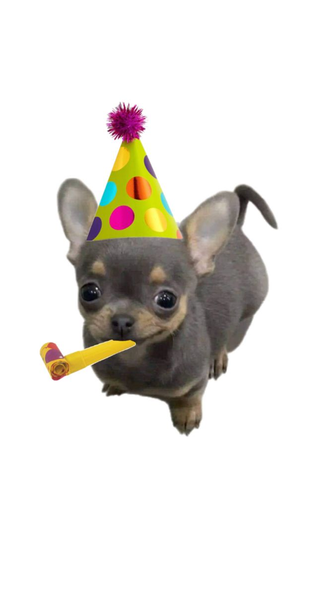
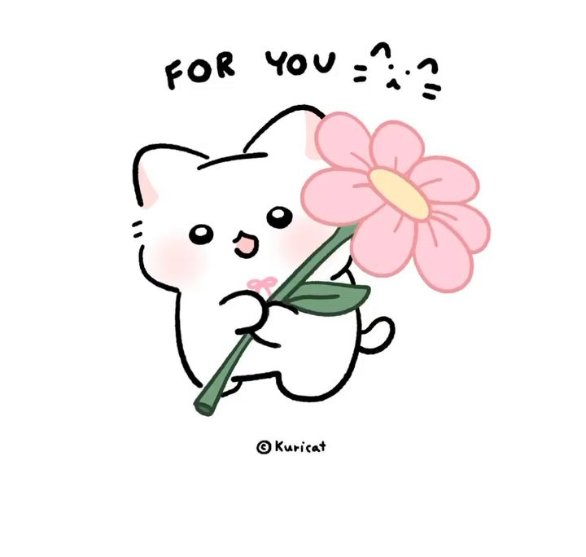

To my strong girl, happy happy birthday. I hope you’re having a good day and you’re happy because you deserve it. (lord kaawan nito to kahit ngayon lang).
Thank you for proving that unexpected friendships are one of the best. I’m forever grateful that Seventeen brought you to me. As what Cheol said, I didn’t find them late — I found them when I needed them the most, and when I finally found them, they gave me you, someone I needed too. I couldn’t imagine my carat life without you, ri batumbakal (legends lang nakaka alam).
Bebi, do bear in mind that you’re more than the negative thoughts in your head. You might see messy and difficult, but to me you’re a rare concept that people need to vision clearly. An abstract that needs someone smart enough to figure it out, and someone who’s willing to learn so deep so that they can truly understand.
I hope you know how precious you are despite your shortcomings, and I wish you don't see yourself like that. Please be gentle to yourself — be kind to my precious bebi.
Even if you built your walls too high, okay lang sa’kin yan — may tips at tricks ako ng akyat bahay gang kaya g lang to boss 😉 joke lang po,, what I’m trying to say is I understand you, okei? Just know that I will sit with you in silence and give you my tightest hug. You can always be vulnerable towards me (lamonayan sah).
I couldn’t thank you enough for putting up with me always hayyy — kamsamida jesus may Jo ako. There’s so much I want to say, like I’m so so proud of you for being such a wonderful girl who’s willing to do everything for the family that she loves so much. You amaze me in so many things, especially when you write (si ri po kasi bias ko), and I wish you genuine happiness and peace.
You deserve every little bit of good thing this world has to offer, and I can’t wait for it to come your way. Ah basta — I believe in you, just keep on going, for I know someday you will be great. I have always believed that you’ll get out of this so-called "laylayan" in our terms, and you will build a life that you want for yourself.
There are so many things that await you, and I hope all of them are great things filled with kindness. Manonood pa tayo ng concert ng Seventeen ha? Tapos mag-ttravel pa tau okei??